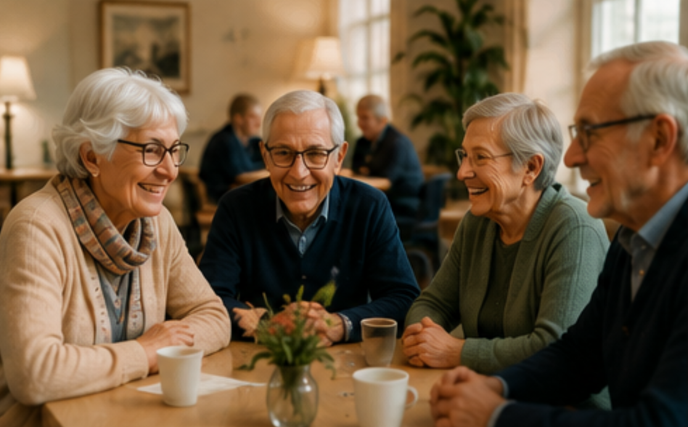

Bättre tänkande – starkare samspel
Vi utvecklar hur människor tänker, samarbetar och fattar beslut - med schack som verktyg
Kontakta ossSpela, utforska och lär genom att göra.
Upptäck hur du tänker, samarbetar och fattar beslut.
Använd insikterna i skolan, arbetslivet och vardagen.
Schack ger barn och unga möjlighet att utveckla koncentration, problemlösning och tålamod på ett roligt och engagerande sätt. Samtidigt tränas självständigt tänkande, ansvarstagande och förmågan att hantera både medgång och motgång. Målet är att skapa spelglädje och nyfikenhet i en trygg miljö där alla får utvecklas i sin egen takt.

Schack är en aktivitet som kombinerar mental stimulans med social gemenskap. För många äldre blir spelet ett sätt att hålla hjärnan aktiv, träffa andra människor och fortsätta utmana sig själv på ett lustfyllt sätt. Samtidigt spelar tidigare erfarenhet ingen roll. Det är aldrig för sent att börja!
Schack är en aktivitet där alla kan delta utifrån sina egna förutsättningar. Spelet skapar naturliga möten mellan människor med olika erfarenheter, åldrar och bakgrunder. Samtidigt tränas koncentration, problemlösning och logiskt tänkande i en trygg och respektfull miljö där lärandet står i fokus.
Schack är ett kraftfullt verktyg för att utveckla strategiskt tänkande, problemlösning och beslutsfattande. Genom engagerande aktiviteter och workshops får deltagarna träna på att analysera situationer, tänka långsiktigt och fatta genomtänkta beslut under nya förutsättningar. Samtidigt skapas naturliga möjligheter till samarbete, kommunikation och reflektion. Egenskaper som är värdefulla i både ledarskap och arbetsliv.
Schack är en rolig aktivitet som för människor samman. Genom gemensamt spel skapas naturliga samtal, skratt och nya möten i en avslappnad miljö. Oavsett om det handlar om ett företagsevent eller en turnering är målet att skapa en positiv upplevelse där alla kan vara med.